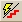

| Runs the current INR file. |
| Saves the current INR file and runs it. |
| Runs the current INR file from the point at which the pointer is currently
located within the file. |
 | Runs the current INR file from the beginning of the file to the line above
the pointer point. |
|  | Runs the current command from the point at which the pointer is currently
located, and then moves the pointer to the next line. |
| Opens Mini Builder (one-line Builder) in the Editor window. To move the
script from the Mini Builder to the Editor, copy and paste it, or drag and drop
it in the Editor window. |
| Opens the Find dialog, allowing you to search for words within the
Editor window. |
| Repeats the last search performed. |
| Opens the Find & Replace dialog, allowing you to search for, and
replace, words within the Editor window. |
| Imports a template. |
| Turns on/off automatic display of command tips. |
|
|
Configures available script engine properties. Click the down arrow for a
list of language scripts. The black dot indicates which script is currently
active.
Note: At this time, only ASAPScript, Python, VBScript, Jscript, PerlScript,
and LUAScript are supported.
|
 | Turns on/off the Tolerance Data Table in the Editor window. |
 | Opens the Tolerance Options dialog box for the Figure(s) of Merit
analysis. |
 | Updates the Tolerance Data Table to reflect changes in the
script. |
 | Defines a tolerance parameter within the Tolerance Editor window. |
 | Defines a compensator parameter within the Tolerance Editor
window |